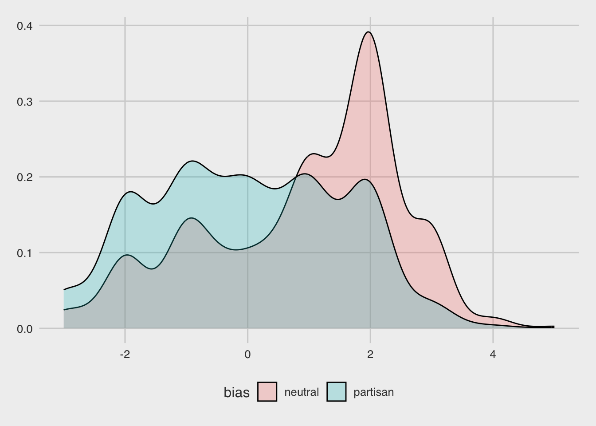
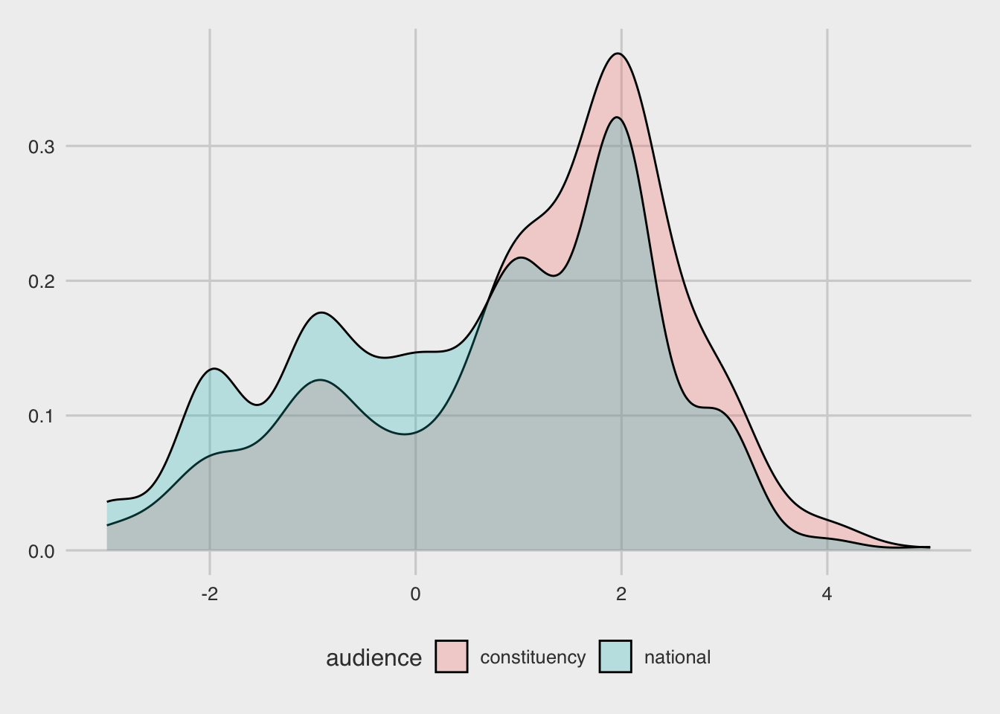

rm(list=ls())
library(tidyverse)
library(tidytext)
library(lubridate)
library(ggthemes)
library(SnowballC)Final Project
In this project, I will examine political polarization. Polarization has been an incredibly impactful trend in recent American politics. Both the left and right in this country are becoming more extreme over time. Congress has failed to produce bipartisan cooperation for at least the past two decades. Each party uses the filibuster to hold the other hostage when they are in power. This leaves America falling behind the rest of the world as we are not able to respond effectively to problems the country faces.
In this project I will analyze a set of tweets from politicians across the country. I will analyze the sentiment of words in their tweet based on whether the tweet is partisan or nonpartisan. From that, I hope to glean information about the kind of words politicans are using to describe partisan vs. nonpartisan issues. If my intuitions are correct, partisan tweets will use more negative language than nonpartisan tweets. This will backup arguments that political polartization is happening in this country and that bipartisan cooperation is extremely difficult.
data2 = read_csv("political_social_media.csv") %>%
select(-"_golden", -"_unit_state", -"_trusted_judgments", -"_last_judgment_at", -"audience:confidence", -message, -"message:confidence", -"orig__golden", -"audience_gold", -"bias_gold", -bioid, -embed, -id, -label, -"message_gold", -source, -"bias:confidence", -"_unit_id")Rows: 5000 Columns: 21
── Column specification ────────────────────────────────────────────────────────
Delimiter: ","
chr (11): _unit_state, _last_judgment_at, audience, bias, message, bioid, em...
dbl (5): _unit_id, _trusted_judgments, audience:confidence, bias:confidence...
lgl (5): _golden, orig__golden, audience_gold, bias_gold, message_gold
ℹ Use `spec()` to retrieve the full column specification for this data.
ℹ Specify the column types or set `show_col_types = FALSE` to quiet this message.data3 = read_csv("political_social_media.csv") %>%
select(-"_golden", -"_unit_state", -"_trusted_judgments", -"_last_judgment_at", -"audience:confidence", -"message:confidence", -"orig__golden", -"audience_gold", -"bias_gold", -bioid, -embed, -id, -label, -"message_gold", -source, -"bias:confidence", -"_unit_id", -bias, -audience)Rows: 5000 Columns: 21
── Column specification ────────────────────────────────────────────────────────
Delimiter: ","
chr (11): _unit_state, _last_judgment_at, audience, bias, message, bioid, em...
dbl (5): _unit_id, _trusted_judgments, audience:confidence, bias:confidence...
lgl (5): _golden, orig__golden, audience_gold, bias_gold, message_gold
ℹ Use `spec()` to retrieve the full column specification for this data.
ℹ Specify the column types or set `show_col_types = FALSE` to quiet this message.data.token = data2 %>%
unnest_tokens(word, text, token = "words") %>%
select(-audience)Here, I’ve “tokenized” my data. This means I’ve extracted each individual word from all the tweets and categorized them by partisan/nonpartisan based on the original tweet the word came from.
data.token %>%
count(word, sort = TRUE) %>%
head(n = 10)# A tibble: 10 × 2
word n
<chr> <int>
1 the 7728
2 to 5955
3 and 3693
4 of 3404
5 in 2940
6 a 2534
7 http 2161
8 for 2142
9 on 1783
10 t.co 1701Here, I’ve found the most common words across tweets. I will go on to remove “stop words,” which are words which are not useful for my analysis, such as overly common words like “the,” “to,” “and,” or “of,” alongside things which are not words which tokenization still gathered up, such as “t.co” or “http.”
data("stop_words")
data.token_nostop = data.token %>%
anti_join(stop_words, by = "word") %>%
filter(!word %in% c("http","t.co","amp","day","rt","1","week","watch","morning","2","3","4","5","6","7","8","9","10","2013","2014","2015","2016","2017","2018","2019"))data.token_nostop %>%
count(word, sort = TRUE) %>%
head(n = 100)# A tibble: 100 × 2
word n
<chr> <int>
1 house 450
2 bill 332
3 president 325
4 congress 305
5 act 303
6 time 296
7 veterans 288
8 health 267
9 government 250
10 jobs 246
# ℹ 90 more rowssent_words = get_sentiments("afinn")tweet.sentiments = data.token_nostop %>%
inner_join(sent_words, by = "word") %>%
ungroup() %>%
distinct()partisan.sentiments = tweet.sentiments %>%
filter(bias=="partisan")neutral.sentiments = tweet.sentiments %>%
filter(bias=="neutral")mean(neutral.sentiments$value)[1] 0.02155689mean(partisan.sentiments$value)[1] -0.2353896partisan.value = partisan.sentiments$value
hist(partisan.value)neutral.value = neutral.sentiments$value
hist(neutral.value)data.token2 = data2 %>%
unnest_tokens(word, text, token = "words") %>%
select(-bias)data("stop_words")
data.token_nostop2 = data.token2 %>%
anti_join(stop_words, by = "word") %>%
filter(!word %in% c("http","t.co","amp","day","rt","1","week","watch","morning","2","3","4","5","6","7","8","9","10","2013","2014","2015","2016","2017","2018","2019"))tweet.sentiments2 = data.token_nostop2 %>%
inner_join(sent_words, by = "word") %>%
ungroup() %>%
distinct()national.sentiments = tweet.sentiments2 %>%
filter(audience=="national")cons.sentiments = tweet.sentiments2 %>%
filter(audience=="constituency")mean(national.sentiments$value)[1] -0.1317747mean(cons.sentiments$value)[1] 0.3592677national.value=national.sentiments$value
hist(national.value)cons.value=cons.sentiments$value
hist(cons.value)
data.token3 = data3 %>%
unnest_tokens(word, text, token = "words")data("stop_words")
data.token_nostop3 = data.token3 %>%
anti_join(stop_words, by = "word") %>%
filter(!word %in% c("http","t.co","amp","day","rt","1","week","watch","morning","2","3","4","5","6","7","8","9","10","2013","2014","2015","2016","2017","2018","2019"))tweet.sentiments3 = data.token_nostop3 %>%
inner_join(sent_words, by = "word") %>%
ungroup() %>%
distinct()policy.sentiments = tweet.sentiments3 %>%
filter(message=="policy")attack.sentiments = tweet.sentiments3 %>%
filter(message=="attack")supp.sentiments = tweet.sentiments3 %>%
filter(message=="support")info.sentiments = tweet.sentiments3 %>%
filter(message=="information")personal.sentiments = tweet.sentiments3 %>%
filter(message=="personal")other.sentiments = tweet.sentiments3 %>%
filter(message=="other")mobil.sentiments = tweet.sentiments3 %>%
filter(message=="mobilization")cons.sentiments.msg = tweet.sentiments3 %>%
filter(message=="constituency")media.sentiments = tweet.sentiments3 %>%
filter(message=="media")mean(policy.sentiments$value)[1] -0.08345979mean(attack.sentiments$value)[1] -0.5368421mean(supp.sentiments$value)[1] 0.2173038mean(info.sentiments$value)[1] 0.07552083mean(personal.sentiments$value)[1] 0.4351464mean(other.sentiments$value)[1] 0.5726496mean(mobil.sentiments$value)[1] 0.5044248mean(cons.sentiments.msg$value)[1] 1.156522mean(media.sentiments$value)[1] 0.2641509policy.value=policy.sentiments$value
hist(policy.value)attack.value=attack.sentiments$value
hist(attack.value)supp.value=supp.sentiments$value
hist(supp.value)
info.value=info.sentiments$value
hist(info.value)personal.value=personal.sentiments$value
hist(personal.value)other.value=other.sentiments$value
hist(other.value)mobil.value=mobil.sentiments$value
hist(mobil.value)
cons.msg.value=cons.sentiments.msg$value
hist(cons.msg.value)media.value=media.sentiments$value
hist(media.value)